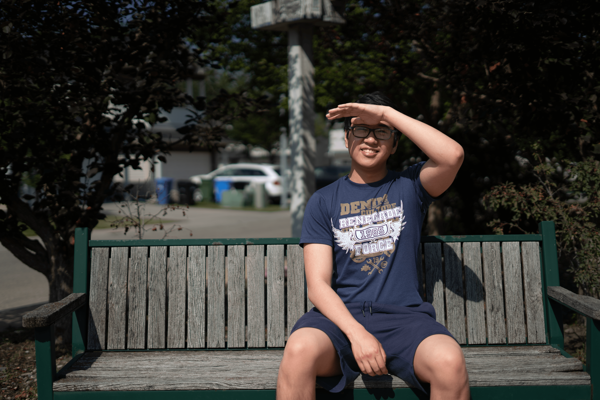
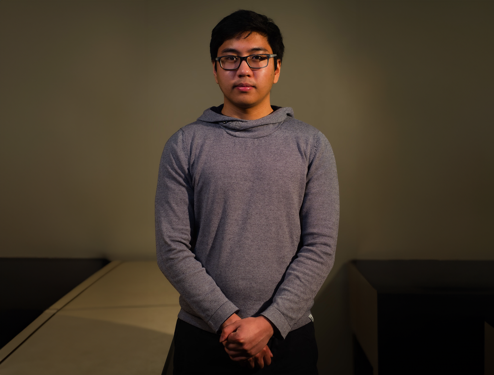

Hello! I'm Kirby Garcia from Calgary, AB, Canada. I am a Web and Visual Designer who is currently enrolled in SAIT's New Media Production and Design Program, graduating at the end of 2024.


Here is my skills section! I specialize in visual design and media production.
Illustration >
I've been digitally painting and drawing/sketching traditionally since 2019.
I'm most skilled in portraiture and realism.
Animation >
I animate 2D, 3D, and Motion Graphics.
I am proficient with the Adobe Creative suite, including Illustrator, After Effects, and Animate programs. I am also familiar with 3D programs like Maxon Cinema4D and Blender.
Visual/Web Design >
I am proficient in HTML, CSS, PHP, Figma, MySQL, and JavaScript. I am adept with web services like Wix and WordPress. I can also work with some mobile design applications like Expo.
I also plan to learn new languages in the near future, such as React or C#.
Photography/Videography/Audio >
I am proficient with producing photography and videos.
I have expertise in planning, filming/shooting, and editing in commercial and artistic media production.
Brand Consulting >
In SAIT's NMPD program, I learned how to approach things like logo design, brand and marketing strategy, target audience analysis, and project management.